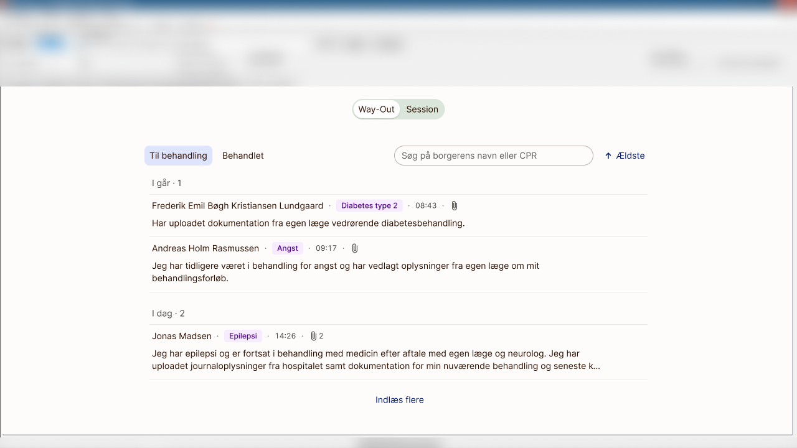
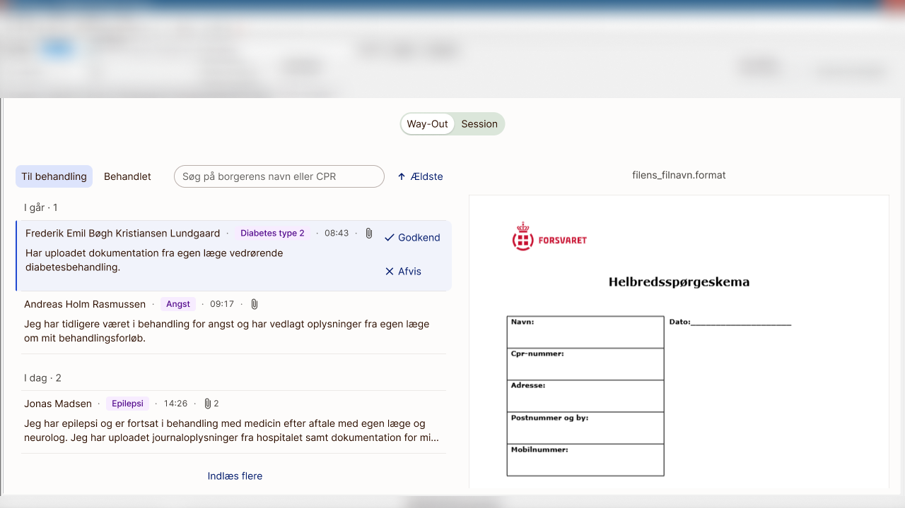
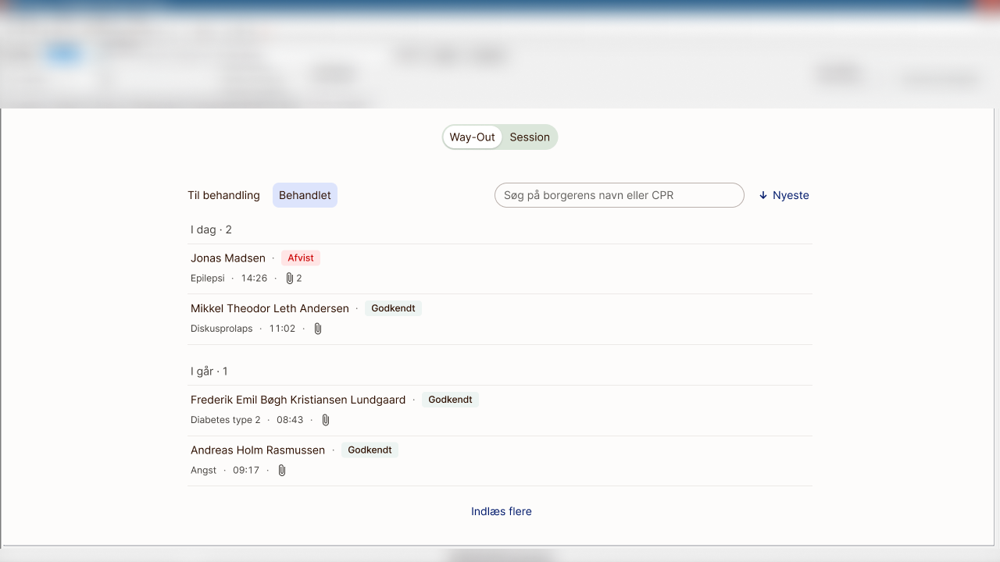
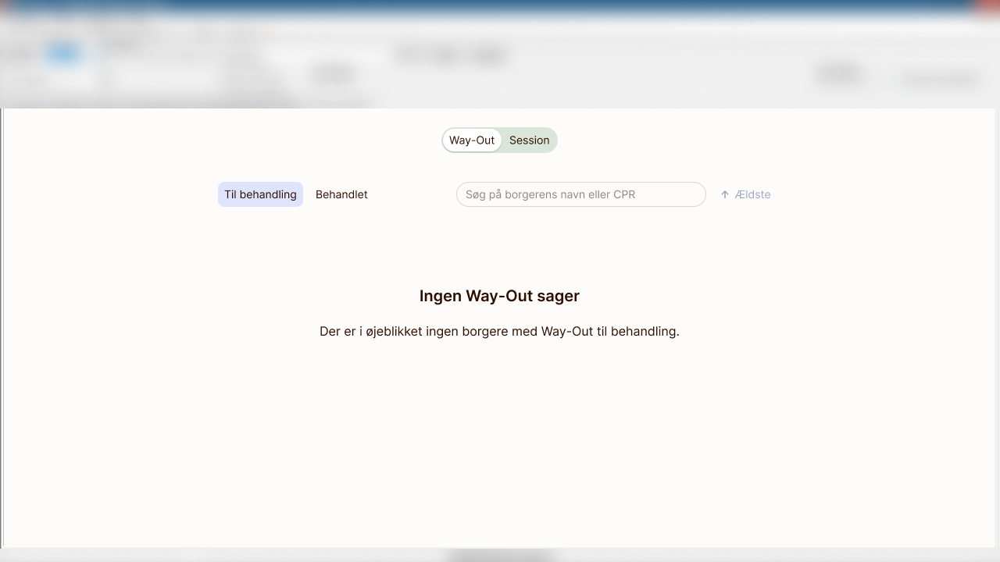
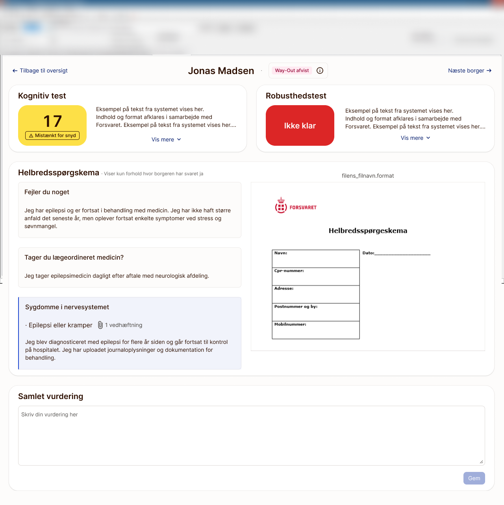
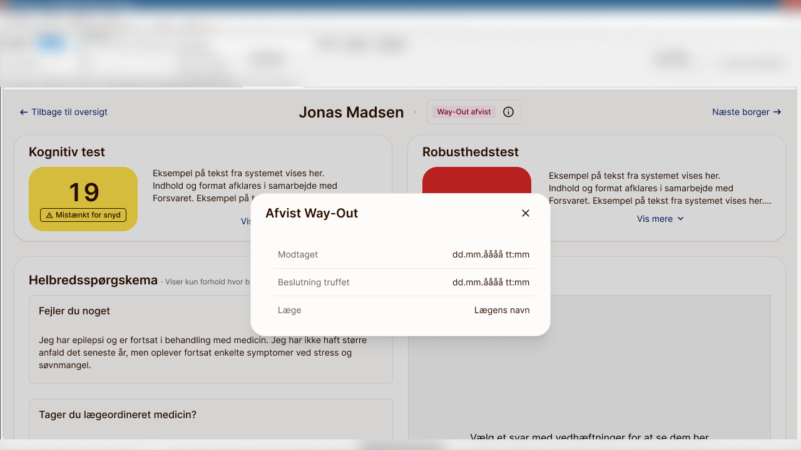

Designing a doctor's review flow for Forsvaret's conscription health screening — a Way-Out tab for pre-session exemption requests and a Session tab for reviewing a conscript's test results on the day — embedded via iframe inside the legacy system where the actual fit-for-duty verdict still had to be recorded. The collaboration with Forsvaret ended partway through the project. Design af et lægefagligt gennemgangsflow til Forsvarets sessionsscreening — en Way-Out-fane til fritagelsesanmodninger inden sessionen og en Session-fane til gennemgang af en værnepligtigs testresultater på dagen — indlejret via iframe inde i det ældre system, hvor selve godkendelsen til tjeneste stadig skulle registreres. Samarbejdet med Forsvaret ophørte midtvejs i projektet.
Note: the conscripts named and shown throughout these screenshots are fictional — dummy data used for illustration only, not real people or cases. Bemærk: de sessionspligtige, der er navngivet og vist i disse skærmbilleder, er fiktive — dummy-data brugt udelukkende til illustration, ikke rigtige personer eller sager.
Conscripts called up for Danish military service can apply for a Way-Out — an exemption from attending the screening session at all, submitted with a written explanation and supporting documentation. A doctor has to review and approve or reject every one of those requests. For everyone who does attend, a doctor reviews the results of a cognitive test and a robustness test the conscript completed in advance, together with a health questionnaire filled in from home, and judges whether they're fit for duty. Sessionspligtige, der indkaldes til dansk værnepligt, kan søge om Way-Out — en fritagelse for at møde op til forsvarets dag (session), indsendt med en skriftlig forklaring og understøttende dokumentation. En læge skal gennemgå og godkende eller afvise hver eneste anmodning. For alle, der møder op, gennemgår en læge resultaterne af en kognitiv test og en robusthedstest, som den sessionspligtige har gennemført på forhånd, sammen med et helbredsspørgeskema udfyldt hjemmefra, og vurderer, om vedkommende er egnet til tjeneste.
My task was to design both from scratch as a single embedded module — a tab living in an iframe next to the legacy "Session" tab doctors already used — covering everything up to the point of decision, since recording the actual verdict was explicitly out of scope for this phase of the project. Min opgave var at designe begge dele fra bunden som ét samlet, indlejret modul — en fane placeret i et iframe ved siden af den ældre "Session"-fane, lægerne allerede brugte — der dækkede alt frem til selve beslutningen, da det at registrere den faktiske afgørelse eksplicit lå uden for denne fases scope.
The starting point was a requirements specification Forsvaret's own team had written up — every field a doctor needed to see, every decision they needed to make, but not much on how those fields actually got used in the moment. The plan was to run a workshop with a couple of doctors early on, to pressure-test that spec against how they actually work and review the mockups before anything went further. That workshop never happened: The collaboration with Forsvaret was discontinued while this project was still underway, roughly halfway through. Udgangspunktet var en kravspecifikation, Forsvarets eget team havde udarbejdet — hvert felt en læge skulle kunne se, hver beslutning de skulle træffe, men ikke meget om, hvordan de felter faktisk blev brugt i praksis. Planen var at holde en workshop med et par læger tidligt i forløbet for at stressteste specen mod, hvordan de reelt arbejder, og gennemgå mockuppene, før noget gik videre. Den workshop blev aldrig til noget: Samarbejdet med Forsvaret blev afbrudt, mens projektet stadig var i gang, cirka halvvejs igennem.
Everything shown here is what I got to before that point — mockups built directly from the spec, reviewed internally, but never in front of the doctors who'd have used them. I've kept that distinction in mind throughout rather than write it up as more finished than it is. Alt, hvad der vises her, er det, jeg nåede frem til inden det punkt — mockups bygget direkte ud fra specen, gennemgået internt, men aldrig fremvist for de læger, der skulle have brugt dem. Den forskel har jeg haft for øje hele vejen igennem; jeg vil hellere være ærlig omkring, at designet mangler den afgørende valideringsfase, end at fremstille det som mere færdigt, end det var.

Both tabs share the same shell — a list of conscripts. But how the doctor works with the lists is completely different. Begge faner deler samme skal — en liste over sessionspligtige. Men hvordan lægen arbejder med listerne er helt forskelligt.
Selecting a conscript from the queue opens their written explanation next to any attached documentation — a doctor's note, hospital records, or scans. Approve and reject sit right beside the text, keeping the decision anchored directly in the context that informs it. At vælge en værnepligtig fra køen åbner vedkommendes skriftlige forklaring ved siden af eventuel vedhæftet dokumentation — en lægeerklæring, journaludskrifter eller scanninger. Godkend og afvis sidder lige ved siden af teksten, så beslutningen forbliver forankret direkte i den kontekst, der informerer den.

Once a request is decided it moves out of the working queue entirely — into a separate, filterable list of what's already been handled, so a doctor picking this up mid-shift only ever sees what's actually theirs to act on. And because a queue can run dry, the empty state got the same attention as everything else: a plain, unambiguous statement that there's nothing left to review right now. Når en anmodning er afgjort, flyttes den helt ud af arbejdskøen — over i en separat, filtrerbar liste over det, der allerede er behandlet, så en læge, der tager over midt i en vagt, kun ser det, der reelt er deres at handle på. Og fordi en kø kan løbe tør, fik den tomme tilstand samme opmærksomhed som alt andet: en enkel, utvetydig besked om, at der ikke er mere at gennemgå lige nu.


The Session list, shown at the top of this page, is built around the same idea that shaped my other projects: put whatever needs a second look ahead of everything else. A robustness result marked as not ready, a cognitive score flagged for suspected cheating, a Way-Out that was already rejected — any of those earns a marker on the list before the doctor opens the record. A conscript with none of them stays unmarked, which is deliberate: that's the happy path, and it should read as one at a glance. It gives doctors immediate visibility into potential red flags before they even open a file. Session-listen, vist øverst på denne side, er bygget op omkring samme idé, som har formet mine andre projekter: sæt det, der kræver et ekstra kig, foran alt andet. Et robusthedsresultat markeret som ikke klar, en kognitiv score markeret for mistanke om snyd, en allerede afvist Way-Out — alt det giver en markering på listen, før lægen åbner journalen. En sessionspligtig uden nogen af delene forbliver umarkeret, hvilket er bevidst: det er den lige vej, og den skal fremstå som det med det samme. Det giver lægerne øjeblikkeligt overblik over potentielle advarselstegn, allerede før de åbner en sag.


The health questionnaire itself only ever shows answers where the conscript actually reported something — no wall of "no" answers to scan past. Where a condition needs proof, like Jonas's epilepsy diagnosis, the answer carries an attachment; a doctor selects it to render the document itself alongside the questionnaire, rather than downloading it blind. Selve helbredsspørgeskemaet viser kun svar, hvor den sessionspligtige rent faktisk har oplyst noget — ingen mur af "nej"-svar at scanne forbi. Hvor en tilstand kræver dokumentation, som Jonas' epilepsidiagnose, har svaret en vedhæftning; en læge vælger den for at få dokumentet vist direkte ved siden af spørgeskemaet i stedet for at downloade det blindt.

A rejected Way-Out follows the conscript into this view too, but it's a fact to weigh, not a verdict to repeat — the doctor can open when the decision was made and by whom without leaving the page, but has to reach their own conclusion for the session. En afvist Way-Out følger også den sessionspligtige ind i denne visning, men det er et faktum der skal vises, ikke en afgørelse at gentage — lægen kan åbne og se hvornår beslutningen blev truffet, og af hvem, uden at forlade siden, men skal selv nå frem til sin egen konklusion for sessionen.

Every screen here ends the same way: a free-text field for the doctor's overall assessment, and then a switch back to the legacy Session tab to actually record the conscript as fit or unfit for duty. Folding that decision into the new design was outside this phase's scope — a compromise I'd have liked to revisit once the module had proven itself, not one I'd have chosen to ship long-term. Hvert skærmbillede her ender på samme måde: et fritekstfelt til lægens samlede vurdering, og derefter et skift tilbage til den ældre Session-fane for rent faktisk at registrere den sessionspligtige som egnet eller uegnet til tjeneste. At folde den beslutning ind i det nye design lå uden for denne fases scope — et kompromis, jeg gerne ville have genbesøgt, når modulet havde bevist sit værd, men ikke et, jeg selv ville have valgt at sende i drift på lang sigt.
The project didn't get that far. It was discontinued when our collaboration with Forsvaret ended, before the workshop that would have tested these mockups against how doctors actually work ever happened. Projektet nåede ikke så langt. Det blev afbrudt, da vores samarbejde med Forsvaret ophørte, inden den workshop, der skulle have testet disse mockups mod, hvordan lægerne reelt arbejder, nogensinde blev til noget.